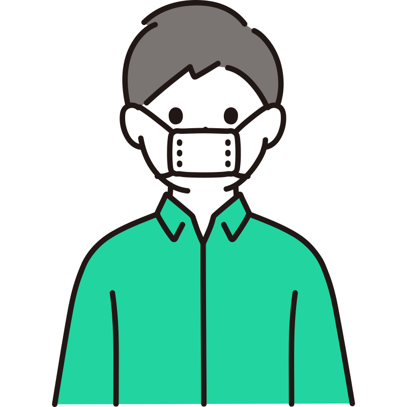
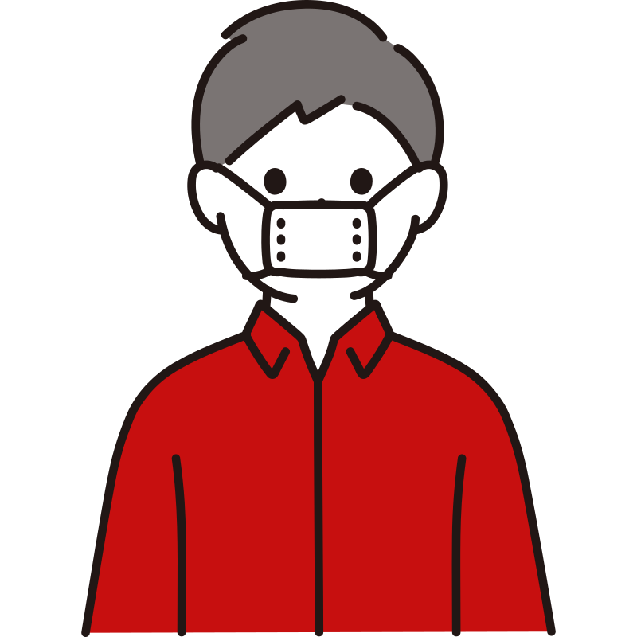

Adults over 40 will develop atrial fibrillation at some point in their lifetime — most without warning.
Of AF cases are entirely asymptomatic. Many patients discover their condition only after a disabling stroke.
Stroke risk reduction achievable with early detection and anticoagulant therapy — if AF is caught in time.